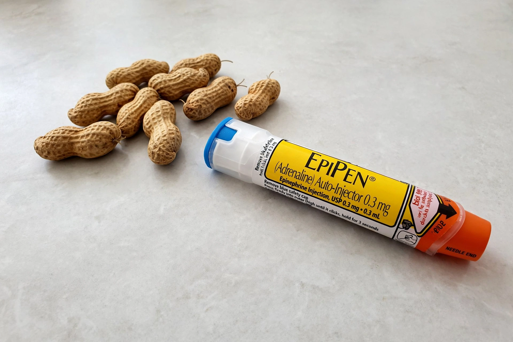

Peanut allergy
From Wikipedia, the free encyclopedia

Peanut allergy is a type of Food allergy caused by an abnormal immune response to proteins in peanuts. It is one of the most common causes of severe allergic reactions (Anaphylaxis) and, unlike milk or egg allergy, is usually lifelong. Prevalence in Western countries roughly tripled between the late 1990s and 2010s, reaching around 1–2% of children.
Mechanism and symptoms
Peanut allergy is typically IgE-mediated: on re-exposure, peanut proteins (such as Ara h 2) cross-link IgE on mast cells, releasing histamine and other mediators. Symptoms range from hives and vomiting to bronchospasm, cardiovascular collapse and death. Peanuts are among the foods most often implicated in fatal food anaphylaxis, alongside tree nuts.
Diagnosis and management
Diagnosis combines clinical history with skin-prick testing, specific-IgE blood tests and component-resolved diagnostics; the oral food challenge is the gold standard. Management is strict avoidance, label reading (peanuts are a mandatory declared allergen in the EU, US and elsewhere), an emergency action plan and carrying adrenaline autoinjectors (e.g. EpiPen) — intramuscular adrenaline is the first-line treatment for anaphylaxis.
Prevention and treatment research
The landmark LEAP trial (2015) showed that feeding peanut to high-risk infants from 4–11 months cut later allergy by about 80%, reversing earlier avoidance advice; guidelines now recommend early introduction. In 2020 the FDA approved Palforzia, the first oral immunotherapy for peanut allergy; other approaches — epicutaneous patches, biologics such as Omalizumab (approved for food allergies in 2024) — aim to raise the reaction threshold.